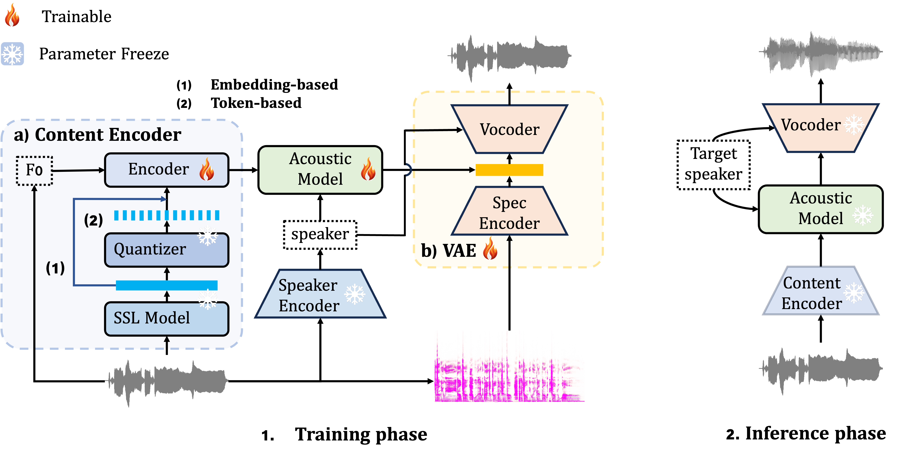

This study compares the sing voice conversion (SVC) system using embeddings extracted from SSL models and the subsequent discretized token representations. In the embedding-based experiments, we found that the number of samples per singer in the training data affects the degree of timbre leakage in the SVC model. Many previously considered effective methods for preventing timbre leakage warrant further examination regarding their specific performance sources. Additionally, we proposed an SVC system utilizing token representations, clustering vast amounts of data into a large codebook to extract phoneme representations that separate timbre information. We preliminarily explored the impact of the SSL model layer depth on phoneme representations and investigated how the number of codebooks affects the richness of these representations. Furthermore, this research advances zero-shot SVC and sets the stage for future work on discrete speech representation, emphasizing the preservation of rhyme.

| Target Speaker | Source Wav | Final Result | |
|---|---|---|---|
| Our Proposal H22+KM4096 | |||
| NeuCoSVC | |||
| Target Speaker | Source Wav | result with pitch-convert | result without pitch-convert | |
|---|---|---|---|---|
| Dataset A | ||||
| Dataset B | ||||
| KM4096+DatasetB | ||||
| Source Wav | Sing reconstructed only by Hubert features | |
|---|---|---|
| H22 | ||
| H24 | ||
| Target Speaker | Source Wav | result with pitch-convert | result without pitch-convert | |
|---|---|---|---|---|
| H22+KM4096 | ||||
| H24+KM4096 | ||||